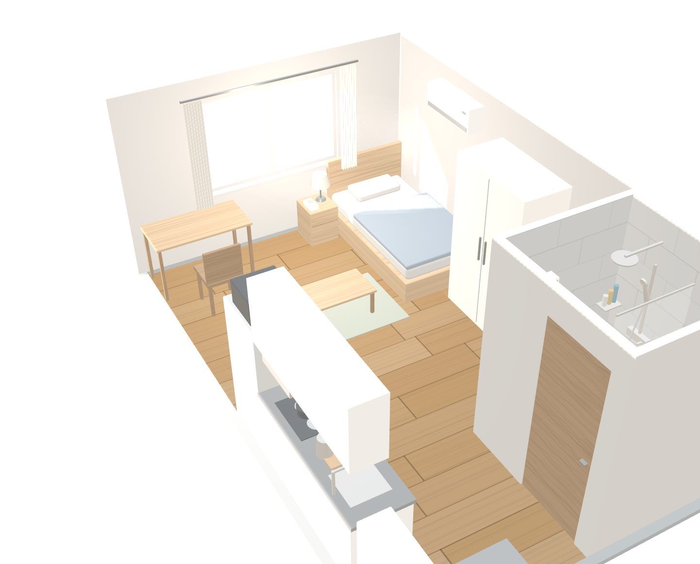
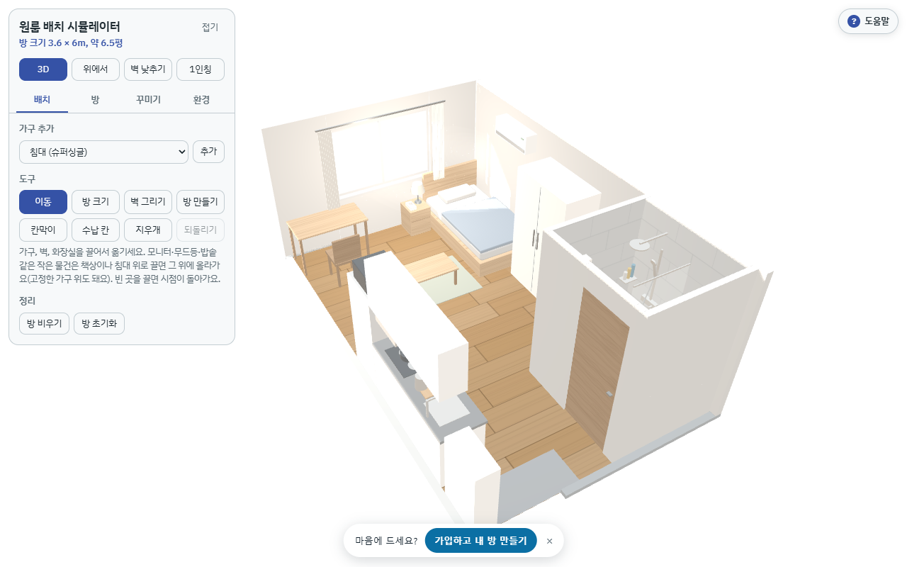

자취방 키우기 🏠
2026.09.15 ~ 2026.11.03 · 7팀 (팀 프로젝트) · 앱 개발 담당
GitHub · 웹에서 써보기 · 3D만 바로 써보기 (가입 X)

3D 배치 화면
프로젝트 소개
자취생용 가계부 + 3D 방 꾸미기 + 커뮤니티 앱
- 가계부: 수입/지출 기록, 달력·내역·분석 탭, 월 예산
- 3D 배치: 원룸에 가구 배치, 1인칭으로 방 안 돌아다니기 (앉기, 눕기, 커튼·냉장고 문 열기 등)
- 커뮤니티: 게시글/댓글/좋아요, 내가 꾸민 방 공유, 신고·차단
- 마이페이지: 닉네임·비번 변경, 다크모드, 회원탈퇴

가입 없이 열리는 3D 체험 페이지 (PC 화면). 기본 방 크기 3.6 × 6m, 약 6.5평
앱 쪽(화면, DB, 연동, 배포)은 제가 맡았고, 3D 시뮬레이터는 팀원과 같이 만들었습니다.
기술 스택
| 구분 | 사용 |
|---|---|
| Frontend | React Native (Expo 57), TypeScript, expo-router |
| Backend | Supabase (Auth, PostgreSQL) |
| 3D | three.js (WebView / iframe으로 앱에 삽입) |
| 배포 | Vercel (웹) |
코드 하나로 iOS·안드로이드·웹을 같이 만들 수 있어서 Expo 선택. 개발 중에는 웹 배포본을 휴대폰 브라우저로 열어서 테스트했습니다.
담당한 부분
- 앱 전체 화면 구현 (홈, 가계부, 3D, 커뮤니티, 마이 탭)
- Supabase 테이블 설계, RLS 정책, SQL 마이그레이션 작성 (002~007)
- 3D 시뮬레이터 공동 개발 (휴대폰 조이스틱, 1인칭 조작 등)
- 3D 시뮬레이터 ↔ 앱 연동 (방 저장/불러오기, 보기 전용 모드, 미리보기 이미지)
- Vercel 배포, 모바일 브라우저 대응
트러블슈팅
1. 좋아요 수를 API로 직접 수정할 수 있었던 문제
상황
RLS를 "본인 글은 수정 가능"으로만 설정해 둠 → 본인 글이면 likes_count 컬럼도 수정 가능한 상태였음. 앱 UI에는 그런 기능이 없어도 API 요청을 직접 보내면 9999로 바꿀 수 있음.
해결
컬럼 단위로 권한을 다시 줌. 좋아요 수는 트리거에서만 바뀌게.
revoke insert, update on public.community_posts from anon, authenticated;
grant update (body, topic, placed, room, room_name)
on public.community_posts to authenticated;
-- likes_count 빠짐 -> 좋아요 트리거만 수정 가능2. 커뮤니티 탭 흰 화면 (모바일에서만)
상황
배포 후 폰으로 커뮤니티 탭 들어가면 화면이 하얗게 멈춤. tsc는 통과했던 코드.
콘솔: Cannot read properties of null (reading 'author')
원인
React Compiler가 켜져 있었는데, 삼항연산자 안에 있던 safetyUser!.author를 조건 밖에서 먼저 계산함. 신고 메뉴가 닫혀 있으면 safetyUser가 null이라 에러.
// before
target={safety ? { kind: ..., author: safetyUser!.author } : null}
// after - ! 없이 미리 계산
const safetyTarget = safety && safetyUser
? { kind: ..., author: safetyUser.author }
: null;이후로 JSX props 안에서는 ! 안 쓰기로 함. 배포 전에 모바일 화면에서 한번씩 띄워보는 것도 추가.
3. 3D 파일 업데이트할 때마다 연동 코드 다시 붙이던 문제
시뮬레이터가 HTML 파일 하나(약 5100줄)라 새 버전이 나올 때마다 저장/불러오기, 조이스틱 같은 코드를 손으로 다시 넣어야 했음. 몇 번 빠뜨려서 저장이 안 되는 일이 생김.
→ 원본에 연동 코드를 자동으로 끼워넣는 node 스크립트 작성 (npm run embed:simulator). 끼울 위치를 못 찾으면 에러 내고 멈추게 함.
4. 커뮤니티 미리보기 때문에 폰 브라우저가 꺼짐
글마다 3D 뷰어를 띄웠더니 폰에서 메모리 부족으로 탭이 죽음. 방 공유할 때 3D 화면을 숨겨서 잠깐 띄우고 스크린샷만 저장하는 방식으로 변경.
회고
- 테스트 코드를 못 짰음. 지금은 직접 눌러보는 걸로 확인 중
- 오래된 폰에서는 3D가 아직 느림
- 앱스토어 출시까지는 못 하고 웹 배포만 함
- DB 보안은 처음에 대충 했다가 나중에 다시 고쳤는데, 처음부터 컬럼 권한까지 생각했으면 좋았을 것 같음